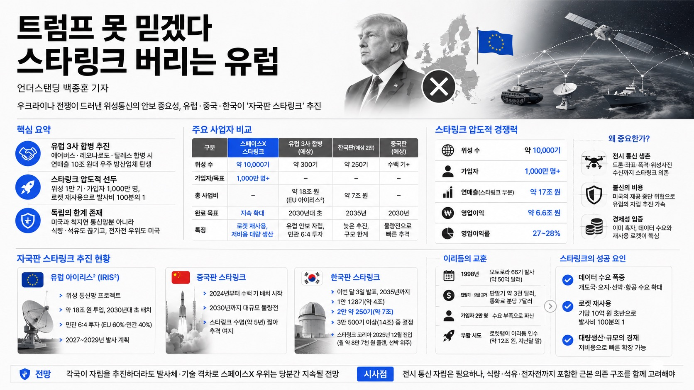

아래 내용은 방송 취재·출연자의 분석과 개인적 견해를 정리한 것으로, 투자 권유나 종목 추천이 아닙니다. 언급 기업·수치는 방송 시점 기준입니다.

01핵심 개요
항목
내용
채널
언더스탠딩
주제
미국 스타링크 의존을 줄이려는 유럽·중국·한국판 위성 인터넷 경쟁
한 줄 요약
우크라이나 전쟁으로 위성통신의 안보 중요성이 입증되며, 유럽·중국·한국이 각자 '자국판 스타링크'를 추진
핵심 결론 1
에어버스·레오나르도·탈레스 3사가 합병해 연매출 10조 원대 우주 방산업체를 만들려 함
핵심 결론 2
스타링크는 위성 1만 기·가입자 1,000만 명, 로켓 재사용으로 발사비를 100분의 1로 낮춰 압도적 선두
핵심 결론 3
미국과 척지면 통신망뿐 아니라 식량·석유도 끊긴다는 점에서 위성 독립의 실효성엔 회의론 존재
02핵심 내용 구조 / 시장 진단
에어버스 디펜스&스페이스, 이탈리아 레오나르도, 프랑스 탈레스 3사가 이미 유럽판 스타링크 컨소시엄에 참여 중이며, 작년 말 합병 발표 후 이번 달 유럽 반독점 당국에 심사 제출 예정.
합병 시 연매출 약 10조 원 규모 우주 방산업체 탄생. 비교: 스페이스X 스타링크 부문 연매출 약 17조 원(작년, IPO 신고서 기준), LG U+ 약 15조 원.
유럽연합(EU) 프로젝트 '아이리스²(IRIS²)': 위성 통신망 사업, 민관 6:4(EU 60%·민간 40%) 자금. 위성 약 300기를 약 18조 원 들여 2030년대 초 배치 목표.
중국판 스타링크: 2024년부터 진행, 이미 수백 기 위성 배치, 2030년까지 물량전. 스타링크 위성 수명(약 5년)이 짧아 추격 여지.
한국판: 이번 달 3일 발표, 2035년까지. 1안 128기(약 4조), 2안 약 250기(약 7조), 3안 500기 이상(14조) 중 결정 예정. 스타링크 코리아는 2025년 12월 이미 진입(월 약 8만7천 원 플랜, 선박 위주).
03기술적·시장 맥락
우크라이나 전쟁 사례: 2022년 발발 당시 머스크가 스타링크 장비 5만 대 이상 지원. 접시형 안테나(직사각형 약 50cm, 3kg)를 펴고 노트북·폰이 와이파이로 접속. 최전방엔 군용 통신이 없어 드론 좌표·폭격·위성사진 수신에 스타링크가 생존과 직결.
불신의 비용: 2024년 젤렌스키-트럼프 백악관 충돌 후 미국이 '스타링크 제공 중단'을 언론에 흘림 → 유럽이 '전시에 미국에 통신망을 의존하는 위험'을 절감하고 독립 추진.
경제성 입증: 스타링크 부문 영업이익 약 6.6조 원, 영업이익률 약 27~28%로 이미 흑자(로켓·AI 부문은 적자). 가입자 비중은 아시아가 최다(지상망 미비 개도국 + 저렴한 재발사 비용).
위성 궤도: 정지궤도 위성은 멀리 고정, 저궤도(LEO) 위성은 90분에 지구 한 바퀴. 통신용은 저궤도라 다수 위성이 필요.
이리듐 교훈: 모토로라가 1998년 66기 발사(약 50억 달러, 기당 1천억 원 이상)했으나 단말기 약 3천 달러·통화료 분당 7달러·가입자 2만 명으로 파산. 지금은 데이터 활용 수요 증가 + 로켓 재사용(스타링크는 기당 10억 원 초반)으로 사업성 확보. 이리듬은 로켓랩이 약 12조 원에 인수(지난달 말)해 부활 시도.
04전략적 의미
위성 인터넷은 '경제성(돈이 됨)'과 '군사 안보(전시 자립)' 두 축에서 각국이 자국판을 추진. 소버린 AI(자국 AI 주권) 논쟁과 유사.
유럽은 미국과의 관계 악화(주독 미군 감축, 토마호크 미사일 미제공, 방위비 분담 압박)를 실감해 '미국 없는 유럽'을 상상하기 시작. 한국은 규모가 작아 독립 실효성에 의문.
회의론: 미국과 진짜 척지면 식량·석유가 함께 끊기고, 위성에 방해 전파를 쏘는 기술도 미국이 우위 → 통신망만 독립해도 근본 의존은 남는다는 지적.
05핵심 정리 표
종목/이슈
견해
근거
스페이스X 스타링크
압도적 1위, 유일한 흑자 부문
위성 1만 기·가입자 1천만, 로켓 재사용으로 발사비 100분의 1
유럽 3사 합병
성사 가능성 높음, 안보용 최소 대응
기존 합작 전례 다수, EU와 플랜 공조, 300기 규모
중국판 스타링크
물량전으로 빠른 추격
2024년부터 수백 기 배치, 스타링크 수명 짧음
한국판 스타링크
규모 작아 실효성 의문
2035년 목표로 늦고, 미국 의존 구조 근본은 유지
로켓랩(이리듐 인수)
스페이스X 모델 복제 시도
발사체+위성+위성통신, "일런 머스크만 없을 뿐"
06활용 시나리오 / 시사점
우주·위성 테마 투자 관점: 스페이스X(비상장)·로켓랩 등 미국 우주주, 유럽 합병 방산주, 한국 코스닥 우주 기업이 자국판 스타링크 발주(한국 약 7조 추정) 수혜 가능. 다만 진입장벽·발사비 격차가 큼.
안보 인프라 정책: 전시 통신 자립은 필요하나, 미국과 적대 시 위성만으로 해결 안 되는 근본 의존을 함께 고려해야 함.
기술 사이클 교훈: 이리듐의 실패(수요 부족·고비용)와 스타링크의 성공(데이터 수요 증가·재사용 발사) 대비는 신기술 상용화의 타이밍이 얼마나 중요한지 보여줌.
07현황 및 전망
유럽 아이리스²는 약 18조 원으로 2030년대 초 배치 완료 목표, 2027~2029년 발사 계획이나 유럽 아리안 로켓은 재발사 기술 미성숙으로 비용 부담.
스타링크는 접시 안테나 기반이라 이동성이 낮고, 폰 직접 수신(다이렉트)은 미국·뉴질랜드 실험 단계로 문자 수준 속도. 지상망이 잘 깔린 한국에서는 오지·선박·항공 등 틈새가 주 용도.
전망: 각국이 저가 입찰로 들어오더라도 결국 스페이스X 발사체를 써야 할 가능성이 커, 스페이스X의 우위는 당분간 지속될 전망.